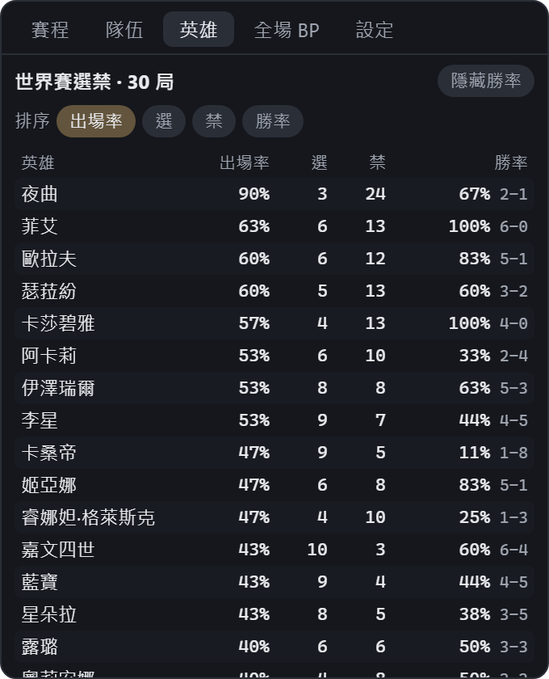
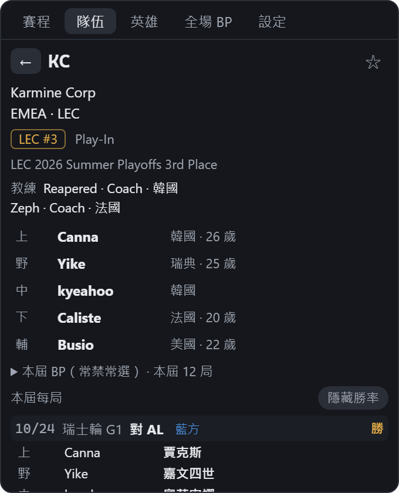
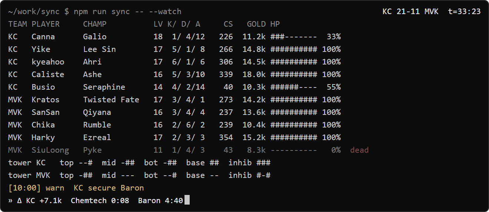

BP 紀錄
每一局的禁選都會存下來。資料視窗多了「英雄」分頁：這屆世界賽每隻英雄的出場率、選用、禁用和勝率。隊伍頁可以一局一局看這隊選了什麼、禁了什麼、贏還是輸；選手頁列出他用過的每隻英雄、勝負和 KDA。開著「不爆雷」時，勝負和勝率會藏起來。


看不了直播的時候，瞄一眼就知道戰況：比分、比賽時間、經濟差、小龍和巴龍還剩多久，還有剛剛發生了什麼。SmalLoL 是非官方的英雄聯盟電競桌面小工具，免費、開源。
0.1.6：BP 紀錄與 Terminalol 模式 · 2026 世界賽期間持續更新


0.1.6：BP 紀錄，和偽裝成終端機的 Terminalol。安裝版會在程式裡提示更新，按一下就好。
每一局的禁選都會存下來。資料視窗多了「英雄」分頁：這屆世界賽每隻英雄的出場率、選用、禁用和勝率。隊伍頁可以一局一局看這隊選了什麼、禁了什麼、贏還是輸；選手頁列出他用過的每隻英雄、勝負和 KDA。開著「不爆雷」時，勝負和勝率會藏起來。


有人問能不能偽裝成 Teams。我們做了偽裝成終端機：設定裡打勾，橫條就變成一個「正在同步」的終端機視窗。像 top 一樣列出十位選手的英雄、等級、K/D/A、補刀、經濟和血量，下面是塔況、最近的紀錄，以及下一條龍和巴龍的倒數；BP 時列出兩隊的選角和禁用。不跳卡片、比賽視窗不開；每一區可以分別開關，預設英文；雙擊回到一般畫面。

上面一行是現在的局面，下面一行是剛剛發生的事。滑鼠移過去才出現按鈕，平常不擋你工作。
巴龍、龍魂、水晶被破、一局打完，在螢幕角落跳一張卡片；推塔、小龍、擊殺這些小事只是一條細條。連續推塔、一起升到 6 級，會合併成同一條，不會疊成一堆。
也可以每一種事件自己設：關掉、只記錄、細條或卡片。把喜歡的隊伍加星號，它的大事會再升一級。
三個選配的小視窗，各自放在你想放的地方。比賽開始時自己打開，沒有比賽時自己收起來。


安裝版會自己更新，不用再回來下載。
Windows 10 / 11。安裝版不需要系統管理員權限，之後會自己更新；免安裝版解壓縮就能用，不會自己更新。
Mac 版是實驗版：macOS 11 以上，Apple 晶片與 Intel 都能用，已通過 Apple 公證；還沒在很多台 Mac 上試過，視窗吸附和自動低調只有 Windows 有。
程式還沒有程式碼簽章，Windows 可能會跳出「Windows 已保護您的電腦」：按「其他資訊」，再按「仍要執行」。
最新版 。所有版本與更新紀錄在 GitHub。
Windows 版已經可以下載。想要 Mac 版的話，留下 Email，Mac 版有消息（做或不做）時寄一封信給你。
只存你的 Email、選的電腦、語言和登記日期，放在 Cloudflare 上。只用來寄上面說的信，寄完就刪除整份名單；不給任何人，也不寄別的東西。隨時可以在上面輸入 Email、按「刪除我的 Email」。
為什麼英雄聯盟版比 MLB 版難。MLB 版 Basesmall 用的是 MLB 官方完整公開的數據：每一球、每位跑者在哪個壘，都有；棒球也比較像回合制，一球一球來。英雄聯盟的官方即時數據只有比分、經濟、擊殺、龍和巴龍這些數字，哪一座塔倒了、BP 進行中誰禁了誰，官方資料裡都沒有；更完整的即時數據（例如選手在地圖上的位置）是透過商業授權提供給合作夥伴的。比賽也是即時進行，還會暫停維修，甚至整局重來。
所以我們在雲端主機上跑電腦視覺。一台伺服器 24 小時盯著官方直播：每秒抽一張轉播畫面，用 OpenCV 的特徵比對和模板比對，讀小地圖上的塔、BP 的英雄卡和比賽計時器；再用計時器量出直播的延遲，和官方即時數據（比分、經濟、擊殺、目標、裝備）對齊、合併，整理成一份資料。程式每五秒讀一次。這個服務也是開源的：smallol-cv。
預設使用公開的那一台；你也可以自己架一台，在設定裡改成你的位址。英雄和裝備的名稱來自 Riot Games 的 Data Dragon。
10/22 推出 Windows 版。10/24 凌晨瑞士輪第一天，是第一個真正的考驗，我們邊看比賽邊修。
世界賽每天都有新狀況。讀錯的、漏掉的、想要的功能，都歡迎告訴我們：到 GitHub Issues 開一則，或在 PTT、Threads 的介紹文底下留言。這一輪的 BP 紀錄和 Terminalol，都是從大家的回饋來的。
找不到答案？到 GitHub 問。
不是。SmalLoL 是獨立的粉絲專案，沒有得到 Riot Games 的認可，也不代表 Riot Games 或任何參與製作、管理 Riot Games 作品的人的觀點。跟任何戰隊也都沒有關係。
第一個版本還在準備，會先出 Windows 版。留下 Email，推出時會寄一封信告訴你。等不及的話，可以照 GitHub 上的說明從原始碼自己建置。
完全免費、開源（Apache License 2.0），沒有廣告，也沒有付費功能。
不會。資料來自官方的直播資料和轉播畫面，都比轉播晚一些。它是讓你不用盯著直播也知道戰況，不是用來搶先知道結果的。
比賽進行中，橫條本來就會顯示比分。不想先知道已經打完的結果，可以在資料視窗打開「不爆雷」，賽程就不顯示比分與勝負。
可以切到低調模式，只剩一小條灰色的數字，看起來不像在看比賽。簡報、全螢幕或開了勿擾時會自己轉成低調；Ctrl+Alt+Shift+H 一鍵藏起所有視窗。
目前只在 Windows 上做過測試，第一個版本只有 Windows。Mac 版要看想要的人有多少，登記時選 Mac，有消息時會告訴你。
安裝版會在程式裡告訴你有新版本，按一下就更新，不用再回來下載。
程式不會。不用帳號、不做分析；它只向比賽資料服務讀取比賽資料，以及檢查有沒有新版本。設定和事件紀錄都存在你自己的電腦上。公開的比賽資料服務只計算「每小時有多少個不同的 App 連線」這個數字：不保存 IP，也不知道是誰。
程式只連兩個地方：比賽資料服務（預設是公開的那一台，可以換成你自己的），以及檢查新版本。只有在你按「▶ 看」的時候，才會用瀏覽器打開你存的直播網址。設定和事件紀錄都存在你自己的電腦上。
公開的比賽資料服務只計算「每小時有多少個不同的 App 連線」這個數字：不保存 IP，也不知道是誰。